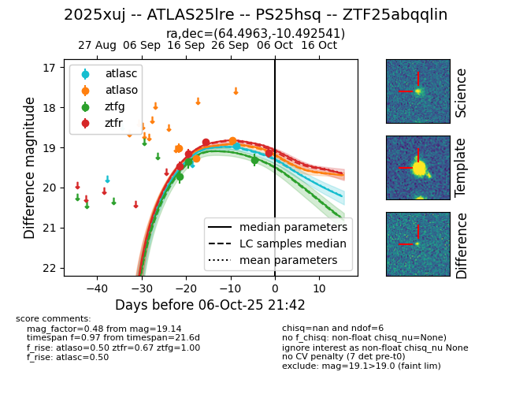
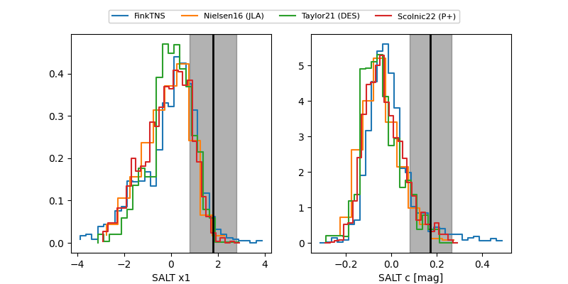

FINK: ZTF25abqqlin
Lasair: ZTF25abqqlin
ALeRCE: ZTF25abqqlin
TNS: 2025xuj
YSE: 2025xuj
ZTF25abqqlin (ztf,fink)
2025xuj (tns,yse)
ATLAS25lre (atlas)
PS25hsq (panstarrs)
equatorial (ra, dec) = (64.4963,-10.49254)
galactic (l, b) = (204.3611,-38.76793)


last atlasc=18.97, atlaso=18.82, ztfg=19.32, ztfr=19.14
1 atlasc, 3 atlaso, 3 ztfg, 4 ztfr detections